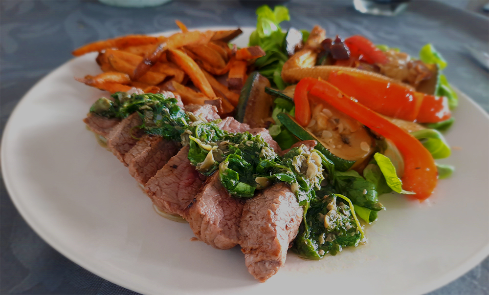

japanse beef teriyaki

italiaanse caponata

panzanella

pasta pesto

salade met gegrilde ananas

banh mi cat ba style

chilaquiles

biefstuk chimichurri & gegrilde groenten
Lekker grillen.

Bereidingsduur: 60 minuten
Aantal personen: 2
Ingrediënten:
200 gram biefstuk
7 eetlepels olijfolie
2 eetlepels kappertjes
5 takjes basilicum
5 takjes peterselie
0,5 theelepel chilipoeder
1 teentje knoflook
2 eetlepels rodewijnazijn
200 gram zoete aardappelfriet
1 rode ui
1 paprika
0,5 courgette
0,5 theelepel balsamicoazijn
1 theelepel mosterd
100 gram babymais
naar smaak gerookt paprikapoeder
naar smaak tijm
naar smaak oregano
naar smaak zout en peper
naar smaak veldsla
200 gram biefstuk
7 eetlepels olijfolie
2 eetlepels kappertjes
5 takjes basilicum
5 takjes peterselie
0,5 theelepel chilipoeder
1 teentje knoflook
2 eetlepels rodewijnazijn
200 gram zoete aardappelfriet
1 rode ui
1 paprika
0,5 courgette
0,5 theelepel balsamicoazijn
1 theelepel mosterd
100 gram babymais
naar smaak gerookt paprikapoeder
naar smaak tijm
naar smaak oregano
naar smaak zout en peper
naar smaak veldsla
Instructies:
1. Haal de biefstuk uit de koelkast en laat op kamertemperatuur komen.
2. Tijd voor de chimichurrisaus. Meng 6 eetlepels olijfolie, kappertjes, basilicum, peterselie, chilipoeder, knoflook en rodewijnazijn in een kom en maal fijn met een staafmixer of stamp in een vijzel. Breng op smaak met peper en zout.
3. Verwarm de oven voor en maak hierin de zoete aardappelfriet gaar.
4. Snijd de paprika in reepjes, de courgette in plakjes en de ui in grove stukken. Dep de babymais droog. Bestrijk de groenten met wat olijfolie en verdeel hierover gerookt paprikapoeder, oregano, tijm, zout en peper.
5. Gril de groenten in de grillpan tot ze de typische zwarte streepjes hebben.
6. Meng ondertussen de balsamicoazijn, 1 el olijfolie en mosterd met een beetje peper en zout. Dit is de dressing voor de salade.
7. Leg de veldsla op de borden. Gril en schroei de biefstuk dicht zoals aangegeven op de verpakking. Snijd in plakjes.
8. Serveer de biefstuk met chimichurrisaus, zoete aardappelfrietjes en de veldsla met de gegrilde groenten en dressing.
1. Haal de biefstuk uit de koelkast en laat op kamertemperatuur komen.
2. Tijd voor de chimichurrisaus. Meng 6 eetlepels olijfolie, kappertjes, basilicum, peterselie, chilipoeder, knoflook en rodewijnazijn in een kom en maal fijn met een staafmixer of stamp in een vijzel. Breng op smaak met peper en zout.
3. Verwarm de oven voor en maak hierin de zoete aardappelfriet gaar.
4. Snijd de paprika in reepjes, de courgette in plakjes en de ui in grove stukken. Dep de babymais droog. Bestrijk de groenten met wat olijfolie en verdeel hierover gerookt paprikapoeder, oregano, tijm, zout en peper.
5. Gril de groenten in de grillpan tot ze de typische zwarte streepjes hebben.
6. Meng ondertussen de balsamicoazijn, 1 el olijfolie en mosterd met een beetje peper en zout. Dit is de dressing voor de salade.
7. Leg de veldsla op de borden. Gril en schroei de biefstuk dicht zoals aangegeven op de verpakking. Snijd in plakjes.
8. Serveer de biefstuk met chimichurrisaus, zoete aardappelfrietjes en de veldsla met de gegrilde groenten en dressing.